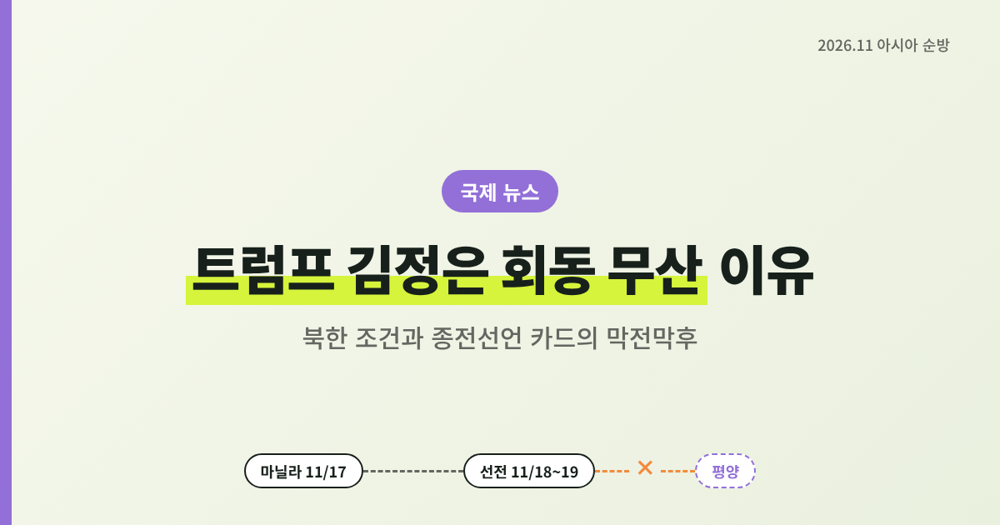
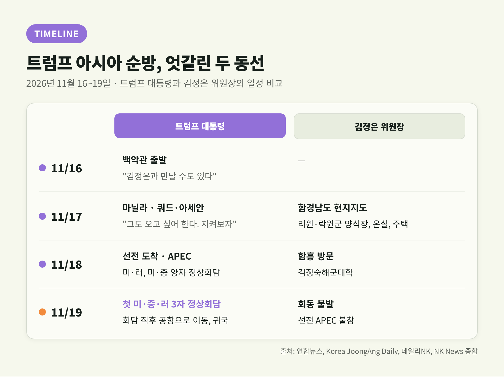
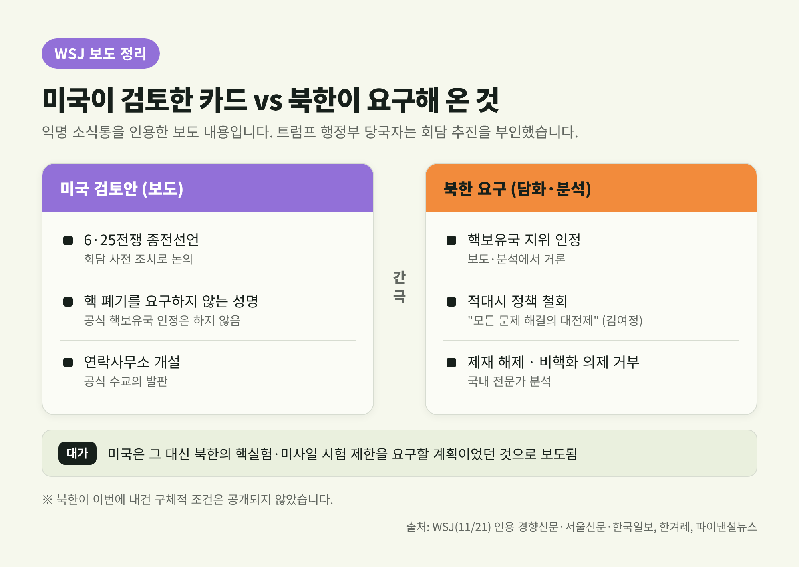
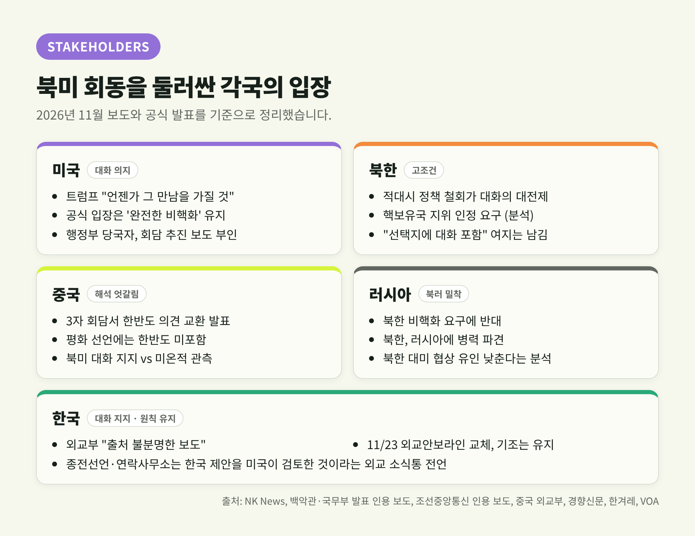
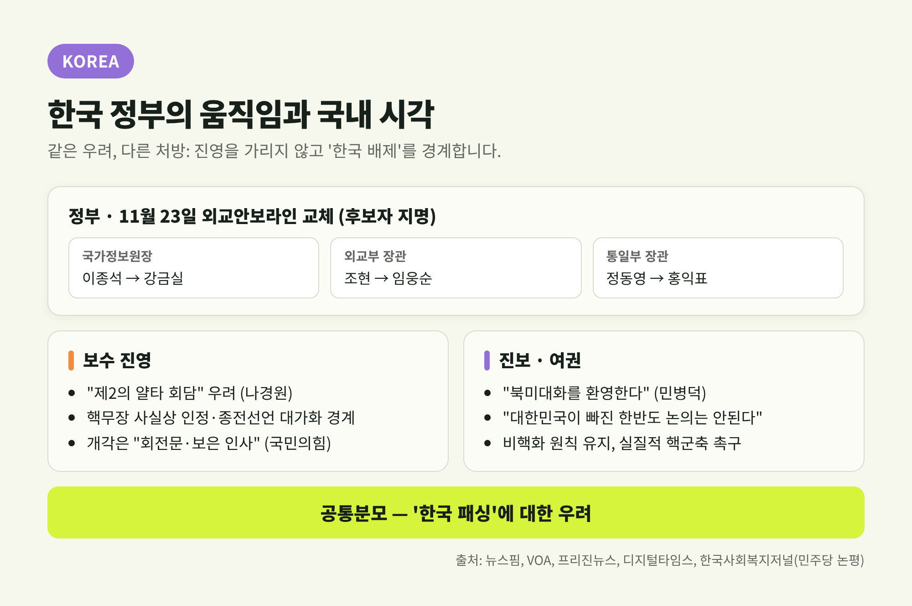
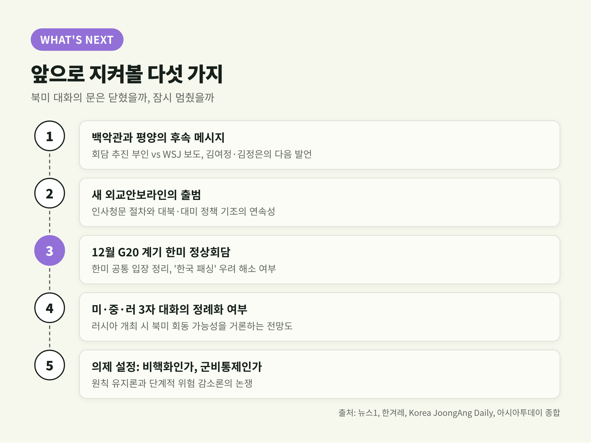

트럼프 김정은 회동 무산 이유, 북한 조건과 종전선언 카드의 막전막후

이번 글에서는 트럼프 대통령의 아시아 순방 중 끝내 성사되지 않은 북미 정상 회동을 정리해 보겠습니다. 무엇이 오갔는지, 왜 어긋났는지, 그리고 한국에는 어떤 숙제가 남았는지를 차례로 짚습니다.
세 줄 요약
- 트럼프 대통령은 11월 16~19일 마닐라·선전 순방 중 김정은 국무위원장과의 회동을 타진했지만, 미국 월스트리트저널(WSJ)에 따르면 북한이 미국이 받아들이기 어려운 조건을 내걸어 무산됐습니다.
- 같은 보도에 따르면 미국은 종전선언, 핵 폐기를 요구하지 않는 성명, 연락사무소 개설까지 검토했습니다. 트럼프 행정부 당국자는 회담 추진 자체를 부인했습니다.
- 한국에서는 비핵화 원칙이 흔들린다는 우려와 대화의 불씨를 살려야 한다는 목소리가 함께 나왔고, 정부는 11월 23일 외교안보라인을 사실상 전면 교체했습니다.
■ 무슨 일이 있었나: 순방 내내 이어진 '기다림'
트럼프 대통령은 11월 16일 백악관을 떠나며 "김정은과 만날 수도 있다"고 말했습니다. 17일 마닐라에서 쿼드·아세안 일정을 소화하면서도 같은 신호를 보냈습니다. 김 위원장의 방중 가능성을 묻자 "그도 오고 싶어 한다. 어떻게 될지 지켜보자"고 답했습니다. (연합뉴스)
외신 보도에 따르면 트럼프 대통령은 이때 김 위원장의 참석 여부가 시진핑 주석에게 달렸다고 하면서 시 주석에게 김 위원장을 데려와 달라고 요청했습니다. 마코 루비오 국무장관도 "적과 만나는 것은 양보가 아니다"라며 분위기를 띄웠습니다. (IBTimes)
18일 중국 선전에 도착한 트럼프 대통령은 푸틴·시진핑 두 정상과 차례로 양자회담을 했습니다. 19일에는 사상 첫 미·중·러 3자 정상회담을 마쳤습니다. 그리고 곧장 공항으로 향했습니다.
같은 기간 김 위원장은 함경남도의 양식장과 온실, 함흥의 김정숙해군대학을 찾았습니다. (데일리NK) 선전 일정과는 거리가 먼 동선이었습니다.
귀국길 기내에서 트럼프 대통령은 NBC 기자에게 "관계는 있지만 만나지 못했다", "회의가 너무 많았다"고 말했습니다. "언젠가는 그 만남을 가질 것"이라는 말도 덧붙였습니다. (NK News, AFP) 2025년 경주 APEC에 이어 두 해 연속 APEC 계기 회동이 불발된 셈입니다.

■ 막전막후: WSJ가 전한 세 장면
이번 사안이 단순한 '불참'으로 끝나지 않은 것은 11월 21일(현지시간) WSJ 보도 때문입니다. 협상 사정을 아는 소식통들을 인용한 이 보도에는 세 장면이 담겼습니다.
첫째, 막판 협의와 북한의 조건입니다. 보도에 따르면 트럼프 대통령은 순방 전 참모들에게 김 위원장과의 대면 회담을 성사시키라고 압박했습니다. 양측은 막판까지 회동을 타진했지만, 김 위원장이 미국이 수용할 수 없는 조건을 내걸면서 논의가 멈췄다고 합니다. 조건의 구체적 내용은 공개되지 않았습니다. 다만 국내 보도와 분석은 핵보유국 지위 인정, 그리고 제재를 포함한 '대북 적대시 정책' 철회를 유력하게 거론합니다. (한국일보, 한겨레)
둘째, 미국이 검토했다는 '패키지'입니다. 보도에 따르면 미 당국자들은 회담의 사전 조치로 6·25전쟁 종전선언을 논의했습니다. 북한을 공식 핵보유국으로 인정하지는 않되, 핵 프로그램 폐기도 요구하지 않는 성명도 검토 대상이었습니다. 대신 핵실험과 미사일 시험에 제한을 거는 방안이었습니다. 공식 수교의 발판으로 연락사무소를 여는 구상도 거론됐습니다. WSJ는 이를 미국 정책의 중대한 전환으로 평가했고, 국내 일부 언론은 '사실상의 북핵 용인'이라고 해석했습니다. (데일리안, 서울신문) 이 구상이 실제로 북한에 전달됐는지는 확인되지 않았습니다. (한겨레)
셋째, 뜯기지 않은 편지입니다. 보도에 따르면 트럼프 대통령은 지난해부터 기존 전화선과 채널로 연락을 시도했지만 아무도 응답하지 않았습니다. 그래서 친서를 썼습니다. 백악관 측은 뉴욕 맨해튼의 북한 유엔대표부 앞에서 지나가는 북한 외교관에게 편지를 건넸다고 합니다. 그 외교관은 나중에 유엔 회의장에서 개봉하지 않은 봉투를 미국 대표 앞에 내던졌다는 것이 소식통들의 전언입니다. (파이낸셜뉴스, 서울경제) 북한이 트럼프 친서를 받지 않았다는 보도는 2025년에도 NK News 등을 통해 나온 적이 있습니다.
미국 정부의 공식 입장은 결이 다릅니다. 트럼프 행정부의 한 당국자는 김 위원장과의 회담을 주선하려는 노력은 없었다며 보도를 부인했습니다. 백악관은 북한 비핵화 입장에 변화가 없다고 밝혔습니다. 미 국무부도 18일 팩트시트에서 "북한의 완전한 비핵화에 계속 전념한다"고 적었습니다. (파이낸셜뉴스 영문) 보도와 공식 입장 사이의 이 간극은 아직 메워지지 않았습니다.

■ 왜 중요한가: 흔들리는 '비핵화' 원칙
이 보도가 무게를 갖는 이유는 미국의 대북 원칙과 맞닿아 있기 때문입니다. 미국 정부는 지금도 공식 문서에서 북한의 '완전한 비핵화'를 목표로 적고 있습니다. 핵 폐기를 요구하지 않는 성명은 그 원칙에서 한 걸음 비켜서는 일입니다. 전문가들이 이를 미국 대북정책의 중대한 변화로 보는 이유입니다. (경향신문, 한겨레)
배경에는 달라진 숫자가 있습니다. WSJ 추산으로 북한의 핵탄두는 2019년 20~30기에서 현재 약 60기로 늘었습니다. 미 본토에 닿는 고체연료 대륙간탄도미사일(ICBM)도 배치했습니다. WSJ는 11월 6일 위성사진에서 영변 우라늄 농축시설의 증축동을 확인했다고도 전했습니다. (아시아투데이) 2019년 하노이 회담 때 북한은 영변 핵시설 제한을 내걸고 제재 5건의 해제를 요구했습니다. 지금은 핵 지위 자체를 인정하라고 요구합니다. 협상의 문턱이 그만큼 높아졌다는 평가가 나옵니다. (고유환 동국대 명예교수, 중앙일보 칼럼)
한국에 직접 걸린 문제도 있습니다. 미 본토를 겨냥한 시험만 제한하는 거래가 된다면, 한국을 겨냥한 전술핵 위협은 그대로 남는다는 지적입니다. (뉴스1) '완전한 비핵화' 원칙이 느슨해지면 미국 확장억제에 대한 한국·일본의 신뢰가 흔들릴 수 있다는 우려도 이어졌습니다. (폴리뉴스)
■ 각국은 어디에 서 있나
미국 — 트럼프 대통령은 대화 의지를 숨기지 않습니다. 동시에 "그들이 핵을 없애길 원한다"고 말했습니다. "간단한 합의를 하고 승리를 주장하기는 매우 쉽겠지만" 그렇게 하고 싶지는 않다고도 했습니다. (WSJ 인용, Kurdistan24) WSJ 보도를 전한 국내 매체들은 이달 초 중간선거 패배 이후 외교 성과가 필요한 처지라는 분석도 함께 소개했습니다. (경향신문, 한겨레)
북한 — 김여정 노동당 총무부장은 11월 4일 담화에서 "미국의 대조선 적대시 정책 포기가 모든 문제 해결의 대전제"라고 했습니다. 그러면서도 "선택지에는 분명 대화가 포함돼 있다"고 여지를 남겼습니다. (파이낸셜뉴스) 회동 무산 직후인 11월 22일, 김 위원장은 러시아 등 10개국 대사의 신임장을 직접 받았습니다. 최고지도자가 직접 신임장을 받은 것은 약 30년 만입니다. 이 자리에서 그는 "패권도 팽창도 추구하지 않는다"고 말했습니다. (한국일보) 양무진 북한대학원대 교수는 핵보유국 인정과 적대시 정책 종식이 대화의 전제임을 재확인한 것으로 풀이했습니다.
중국 — 중국 외교부는 19일 3자 회담에서 세 정상이 한반도 문제를 포함한 지역 현안에 대해 의견을 나눴다고 밝혔습니다. 그러나 세 정상의 '평화 선언'에 한반도는 담기지 않았습니다. (중국 외교부, 경향신문) 중국의 역할을 두고는 해석이 갈립니다. 시진핑 주석은 이재명 대통령에게 북미 대화 재개 노력을 지지한다고 말한 것으로 전해졌습니다. (IBTimes) 반면 시 주석이 자신에게 쏠릴 주목을 나누고 싶지 않아 김 위원장의 방중에 미온적이었을 수 있다는 분석도 있습니다. (데일리NK, 한겨레 인용 전문가)
러시아 — 북한의 비핵화 요구 자체에 반대하는 입장입니다. (경향신문) 북한은 러시아에 병력을 보낼 만큼 밀착해 있습니다. 이런 북·중·러 관계가 북한이 미국과의 협상을 서두르지 않게 만든다는 분석이 있습니다. (세계일보) 반대로 쌀값 급등과 통화 약세 같은 경제난을 들어 이 설명만으로는 부족하다는 반론도 나옵니다. (데일리NK)

■ 미·중·러 회담과의 관계: 한반도는 '후순위'였나
트럼프 대통령은 회담 뒤 세 정상의 사진을 1945년 얄타회담 사진과 나란히 올렸습니다. "강대국들(The Great Powers) 1945, 2026"이라는 문구도 붙였습니다. (서울신문) 선언문에는 "핵전쟁은 이길 수 없고 결코 싸워서는 안 된다"는 원칙이 담겼습니다. 반면 감축 목표나 일정은 없었습니다.
고유환 교수는 "한반도 문제는 긴급한 현안이 아니기 때문에 우선순위에서 밀린 것으로 보인다"고 진단했습니다. (경향신문) 유지훈 한국국방연구원 연구위원은 다른 각도를 짚었습니다. 미·중·러 핵군축 대화가 북핵 문제를 별도 의제로 다루거나 다른 전략 현안과 엮을 수 있다는 것입니다.
북한의 셈법과 연결하는 시각도 있습니다. 김성배 국가안보전략연구원장은 김 위원장이 핵보유국 자격으로 강대국 회담에 끼기를 원했을 수 있다고 봤습니다. 3자 회담이 정례화돼 러시아에서 열린다면 그때 북미 회동이 가능할 수 있다는 전망도 내놨습니다. (한겨레)
■ 한국의 반응: 쇄신론과 비핵화 원칙 논쟁
정부의 첫 반응은 신중했습니다. 외교부 당국자는 WSJ 보도를 두고 "출처가 불분명한 보도"라고 했습니다. 한편 외교 소식통들은 종전선언과 연락사무소가 한국 정부의 제안을 미국이 검토한 것이라고 전했습니다. (한겨레) 이재명 대통령은 8월 15일 광복절 경축사에서 당사자 간 종전 논의를 제안한 바 있습니다.
외교안보라인 쇄신론은 이전부터 있었습니다. 10월에는 한미 정보협력 갈등을 계기로 여야 양쪽에서 쇄신 요구가 나왔습니다. 당시 이 대통령은 "실용적 국익외교"를 강조하며 사실상 선을 그었습니다. 북미 대화의 불씨를 이어 가려면 라인을 유지해야 한다는 판단이 작용했다는 분석이었습니다. (아주경제)
한 달여 만에 기류가 달라졌습니다. 11월 23일 개각에서 이종석 국정원장, 정동영 통일부 장관, 조현 외교부 장관이 교체 대상이 됐습니다. 국정원장 후보로 강금실 전 법무부 장관, 외교부 장관 후보로 임웅순 국가안보실 2차장, 통일부 장관 후보로 홍익표 전 정무수석이 지명됐습니다. (뉴스핌, VOA) 북미 회동 무산과 개각의 직접 연관성은 확인되지 않았습니다. 다만 북미 대화가 다시 무산되면서 이른바 '자주파'의 입지가 약해졌을 것이라는 분석은 나옵니다. (VOA) 청와대는 기존 정책 기조가 유지된다는 입장입니다. (세계일보)
정치권의 시선은 엇갈립니다. 보수 진영에서는 경고음이 컸습니다. 나경원 국민의힘 의원은 연평도 포격 16주기인 23일 "'제2의 얄타 회담' 우려가 현실화되고 있다"고 했습니다. 정상회담이 북한 핵무장의 사실상 인정이나 종전선언의 대가가 되어서는 안 된다는 주장입니다. (프리진뉴스) 국민의힘 박성훈 수석대변인은 개각을 "회전문·보은 인사"라고 비판했습니다. (VOA)
진보·여권에서는 대화의 필요성과 한국의 주도권을 함께 강조했습니다. 민병덕 더불어민주당 의원은 순방 기간인 19일 "북미대화를 환영한다"면서도 "대한민국이 빠진 한반도 논의는 안된다"고 했습니다. 그는 비핵화 원칙이 흔들려서는 안 된다고도 덧붙였습니다. (디지털타임스) 민주당은 3자 '평화 선언'을 "의미 있는 첫걸음"으로 평가하면서 실질적 핵군축으로 이어져야 한다고 논평했습니다. 개각에 대해서는 실용성과 전문성을 살린 인사라며 환영했습니다. (한국사회복지저널, VOA)
흥미로운 지점은 진영을 가리지 않고 '한국 배제'를 걱정한다는 사실입니다. 한쪽은 원칙의 후퇴를, 다른 쪽은 대화의 공백을 더 크게 우려할 뿐입니다.

■ 전망: 문은 닫혔나, 잠시 멈췄나
대화의 문이 완전히 닫혔다고 보는 시각은 많지 않습니다. 트럼프 대통령은 "언젠가"를 말했고, 김여정 부장도 대화를 선택지에서 지우지 않았습니다. 박원곤 이화여대 교수는 "북한도 결국 트럼프 대통령과의 거래를 염두에 둘 것"이라고 내다봤습니다. (파이낸셜뉴스 영문)
다만 길은 어디로 가느냐에 따라 갈립니다. 빅터 차 전 백악관 국가안보회의(NSC) 아시아국장처럼 비핵화 대신 군비통제를 대화의 출발점으로 삼자는 목소리가 미국 안에서도 나옵니다. (아시아투데이) 앵킷 판다 카네기국제평화재단 선임연구원은 즉흥적 발언이나 편지보다 신뢰할 만한 공식 신호와 상설 군사 채널이 필요하다고 봤습니다. (한국일보) 반면 고유환 교수는 사전 합의 없는 회담은 이전의 실망을 되풀이할 수 있다고 경고했습니다. 그는 훈련이나 핵 인정 같은 안보 이익이 외교 성과와 맞바꿔지지 않도록 한국이 막아야 한다고 제언했습니다.
한국 앞에는 가까운 시험대가 있습니다. 12월 주요 20개국(G20) 정상회의 계기의 한미 정상회담이 새 외교안보라인의 첫 무대로 거론됩니다. (뉴스1) 북미 대화만 기다리기보다 독자적인 전략을 세워야 한다는 주문도 이어집니다. 이병철 경남대 교수는 "북-미 대화만 기다릴 것이 아니라 현실을 직시하고 전략과 지도를 마련하는 게 시급하다"고 했습니다. (한겨레)

정리하면 이렇습니다. 예전의 북미 협상은 '비핵화를 얼마나, 언제'를 다퉜습니다. 지금은 '비핵화를 말할 것인가'부터 다투고 있습니다. 이번 무산은 그 간극이 생각보다 크다는 사실을 드러냈습니다.
대화를 서두르면 원칙이 흔들릴 수 있고, 원칙만 붙들면 대화가 멀어질 수 있습니다. 어느 쪽의 위험을 더 무겁게 볼지는 독자 여러분의 판단에 맡기겠습니다. 결국 남는 질문은 하나입니다 — 다음 만남이 온다면, 그 테이블에 한국의 자리는 마련되어 있을까요.
참고자료
- 월스트리트저널 보도(2026-11-21 현지시간) 인용: 경향신문, 경향신문, 파이낸셜뉴스, 서울신문, 세계일보, 서울경제(영문), 헤럴드경제(영문), Kurdistan24 (2026-11-22~23)
- 연합뉴스(코리아타임스 게재), 트럼프, 아시아 순방 마치고 귀국길…김정은과 회동 불발 (2026-11-19)
- NK News, Trump wraps up Asia trip without meeting North Korean leader Kim Jong Un (2026-11-20)
- AFP(Daily Tribune 게재), Why Kim didn't meet Trump (2026-11-20)
- APA, Trump says he will meet with N.Korea's Kim Jong Un 'at some point', NBC reports (2026-11-20)
- IBTimes UK, Trump Wants Kim Jong Un Talks, but North Korea's 'Hostile Policy' Demand Clouds Possible APEC Meeting (2026-11-18)
- Daily NK, Why the Trump-Kim meeting never happened (2026-11-23)
- Euronews, North Korea's leader highlights 'sovereignty' after rebuffing Trump offer for talks (2026-11-23)
- 중국 외교부, President Xi Jinping Chairs China-Russia-U.S. Summit (2026-11-19)
- 경향신문, 미·중·러 회담서 관심 밖이었던 '한반도'…북핵 셈법 '간극'만 (2026-11-19)
- 한국일보, "종전선언 검토에도 북미회담 무산"… 트럼프 '즉흥 이벤트 외교' 한계 (2026-11-23)
- 한국일보, 북미 대화 불발 후 김정은, 외국 대사 신임장 접수 (2026-11-23)
- 한겨레(서플 게재), "북한, 트럼프 편지도 내던졌다…조건 내걸어 북미 대화 결렬" (2026-11-22), 김정은 '종전 선언' 거부…한국 '북핵 돌파구 찾기' 전략 바뀌나 (2026-11-23)
- 파이낸셜뉴스, 김여정 담화 보도 (2026-11-04), Financial News(영문), Trump-Kim Jong Un Meeting on Sidelines of Shenzhen APEC Summit Falls Through (2026-11-20)
- 아시아투데이, WSJ "김정은, 트럼프 전화·친서 외면"…핵탄두 60기·영변 증축 (2026-11-23)
- 데일리안, 북한 '받아들일 수 없는 조건' 내걸어 미북정상회담 무산 (2026-11-22)
- 폴리뉴스, 北 트럼프 종전선언·친서 모두 거부 (2026-11-23)
- Korea JoongAng Daily, Kim Jong-un's rising price after failed summit (2026-11-24)
- 뉴스1, 비핵화 없이 종전선언까지…한국 빠진 트럼프식 북미협상 (2026-11-23), 북미 정상회담 불발에도 대화 여지…'한국 패싱' 막을 외교력 시험대 (2026-11-22)
- 뉴스핌, 동맹파에 힘실은 李대통령 외교안보 인사 (2026-11-24)
- VOA 한국어, 한국 정부 외교안보 라인 전면 교체 (2026-11-24)
- 세계일보, 北 묵묵부답에… 李대통령, 한·미공조로 대북정책 전환 (2026-11-24)
- 아주경제, 안보라인 '쇄신론' 선 그은 李…북미대화 불씨에 '유지' 무게 (2026-10-14)
- 프리진뉴스, 나경원 "제2의 얄타회담 우려" (2026-11-23)
- 디지털타임스, 민병덕 "북미 대화 환영…하지만 한국 빠진 한반도 논의 안돼" (2026-11-19)
- 한국사회복지저널, 더불어민주당, 미·중·러 '평화선언'에 "실질적 핵군축 이어져야" (2026-11-22)
- 데일리안, 국민의힘, 李대통령 종전 논의 제안 맹공 (2026-08-16)